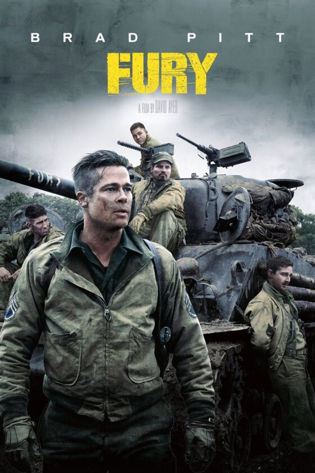

Film · tanks
Fury
I like how Fury portrays war from the perspective of a Sherman and its crew. Both the vehicle and the relationships between its crew interest me.
View official source Jorge Puente García
Jorge Puente GarcíaI enjoy seeing how films and TV series tell stories involving tanks and aircraft. These three titles interest me; browse the carousel to explore them.
Use the buttons or the arrow keys while the carousel is focused. After the last item you return to the first.
1 of 3

Film · tanks
I like how Fury portrays war from the perspective of a Sherman and its crew. Both the vehicle and the relationships between its crew interest me.
View official sourceFilm · aviation
When a film puts fighter aircraft in the spotlight, I pay attention to how it portrays flight. That is why Top Gun: Maverick interests me.
View official source
TV series · aviation
I am interested in following the airmen of the 100th Bomb Group and learning what lies behind their missions, beyond the aircraft.
View official source